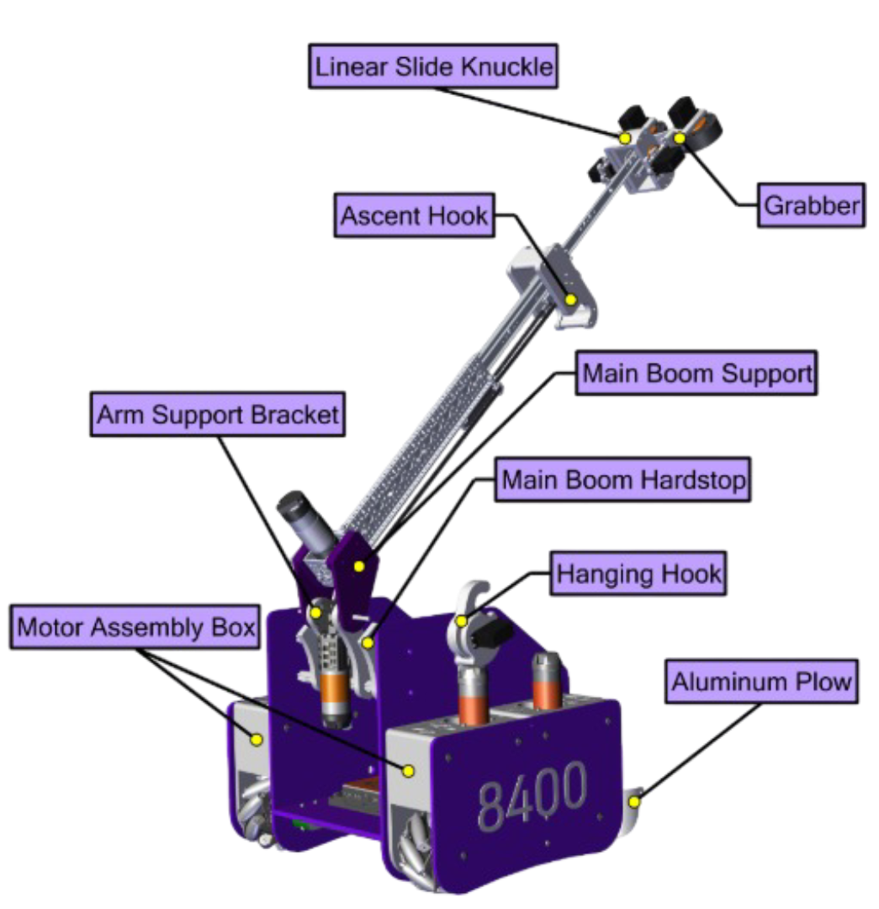

About Us!
Perfect Paradox 8400—building robots, growing leaders, and inspiring our community through STEM.
About us
We are Perfect Paradox 8400, a FIRST Tech Challenge robotics team from Cedar City, Utah. Our team of students, ages 12–18, is proudly affiliated with the Lions Club and 4-H. Each season, we work together to design, build, and program a robot that competes at a high level, while developing skills in engineering, coding, and collaboration. Just as important, we share our passion for STEM through community outreach, service projects, and local events—striving to inspire others and make a positive impact in our community.The Challenge
In the FIRST Tech Challenge (FTC), teams of students design, build, and program a custom robot to complete a series of exciting tasks on a themed playing field. Each season brings new challenges that test creativity, strategy, and technical skill. Teams compete in alliances, combining problem-solving and collaboration to score points while showcasing innovation, teamwork, and gracious professionalism. Beyond the competition, FTC emphasizes learning, leadership, and inspiring a passion for STEM in every participant.
Last season’s FIRST Tech Challenge was called DIVE℠, under the theme
“Into the Deep.” Teams explored underwater ecosystems and marine
science by designing robots to complete aquatic-inspired
tasks—retrieving, placing, and manipulating game elements across a
field that mirrored the complexities of the ocean floor. Robots
operated through both autonomous and driver-controlled phases,
testing students’ engineering, precision, and adaptability.
Throughout the season, teams also focused on data analysis, design
documentation, and sharing their scientific insights—blending
robotics with environmental curiosity and storytelling.
The Process
At Perfect Paradox 8400, we tackle each season’s challenge with creativity, dedication, and teamwork. From brainstorming designs to building and programming our robot, every member contributes their skills and ideas to bring our vision to life. We approach obstacles as opportunities to learn, experimenting with solutions and refining our strategies along the way. Collaboration is at the heart of our process—whether it’s working with alliance partners, supporting other teams, or sharing our progress with the community. For us, the challenge isn’t just about competing—it’s about growing as innovators, leaders, and problem-solvers.

We use a collaborative engineering design process to bring our
robot ideas to life. Each season starts with researching the
challenge and identifying the key tasks our robot needs to
accomplish. We then brainstorm creative solutions, weigh their
feasibility, and prototype different designs before choosing the
most effective approach. Using CAD software and 3D printing, we
design and refine custom parts for our chassis, grabber, and arm.
Our programming team builds organized, modular code that powers
precise autonomous navigation and smooth, reliable control during
matches.
Together our team builds more than a robot—we build skills,
friendships, and confidence. Every member takes part in
brainstorming, prototyping, coding, and testing, learning valuable
engineering and teamwork skills along the way. The robot is the
result of our growth and collaboration.